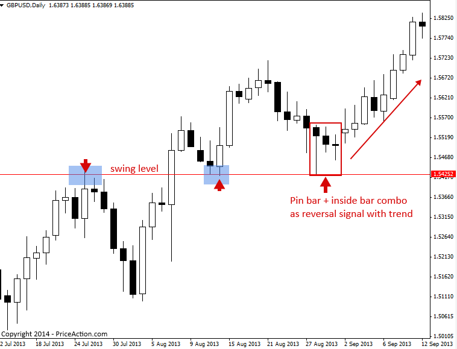
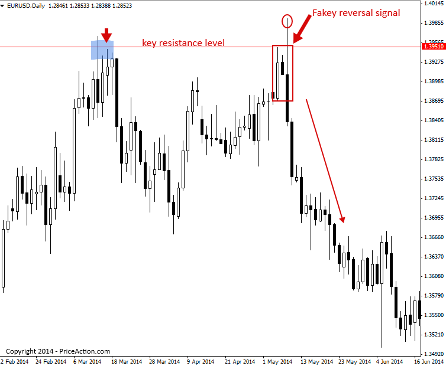

Price Action Reversal Strategies
One of the most powerful ways to use price action trading strategies is as reversal signals in a market. Price action signals can often tip a trader off to an impending reversal (change of direction) in price. These price action reversal strategies often provide accurate entries into a trending market, range-bound market or even counter-trend, and they also often provide good risk to reward potential.
Here’s an example of a counter-trend pin bar reversal signal followed by a pin bar reversal (double pins) with the overall market trend…

From the above example, it’s clear you can use price action reversal signals as counter-trend entries, as in the example on the left, or as entries with the trend, as we see from the pin bars on the right side of the above image.
Many traders make the mistake of assuming that a ‘reversal signal’ is only counter-trend. But that’s not the case at all. Trends ebb and flow, they retrace back to levels, and when they do this we can look for price action reversal signals forming at these levels to trade back in-line with the dominant / overall daily / weekly chart trends.
How to trade price action reversal signals with the trend
When there’s a clear existing trend in a market, we can look for price action reversal signals following a retrace back to a level within that trend.
Often, traders mistake a normal retrace within a trend as a trend change. It’s good to remember that trends can go on for quite some time with many retraces ‘back to value’ or support / resistance, before the trend ends. The general rule of thumb is to trade with the daily chart trend until the price action clearly tells you it has ended. Don’t try to pick tops and bottoms as this is generally a loser’s game, especially if you’re new or relatively new to trading. Instead, when a market has been trending and starts to retrace, begin watching key support and resistance levels for potential price action reversal strategies to rejoin the trend from a high-probability point.
In the example below, we see a clear uptrend was in place and then price retraced back to a support level where it formed a fakey pin bar combo reversal signal which gave us a nice opportunity to re-enter the uptrend from ‘value’ or support.

The next chart we are looking at it shows an example of trading a pin bar inside bar combo signal as a reversal signal with the trend.
Note that price was clearly in an uptrend, then it retraced back to a swing level of support within the trend, followed by the formation of a pin bar and two inside bars within that pin. Since price began pushing higher from this price action pattern, after a retrace lower, we call it a reversal signal, since it caused price to reverse from the retrace lower back into the uptrend…

The chart below shows an example of using an inside bar price action signal as a reversal signal with the dominant daily chart trend.
Note, the trend was clearly up and then price retraced back to a short-term support level within the trend and formed an inside bar which ‘reversed’ that retrace lower and kicked off another push higher within the broader daily chart up trend…

How to trade price action reversal signals with the trend counter-trend
Price action reversal patterns can be used counter-trend as well. Whilst it is a bit more advanced to trade counter-trend, there are some simple things you can look for to put the odds in your favor when trading against a trend…
The main thing to look for when considering a counter-trend reversal signal is if it has formed at a key level of resistance or support. If it has, and the reversal signal is clearly rejecting or better yet, false breaking above or below that level, it’s typically a good potential counter-trend price action reversal signal.
Let’s have a look at some examples…
The chart below shows us a clear example of a good counter-trend price action reversal signal. This was a bearish pin bar sell signal that formed at a key chart level of resistance. It’s these types of reversal signals, especially those on the daily chart time frame that have formed at a key level that can really set off a strong move in the opposite direction sometimes…

The next chart below, shows an example of a counter-trend fakey reversal sell signal that formed at a key chart level of resistance. Note the similarities between this price action reversal signal and the previous pin bar reversal above. Both had obvious false-breaks of a key daily chart level and the tails on the bars were clearly protruding beyond the levels showing a forceful reversal / rejection took place…

Tips on Trading Price Action Reversal Strategies
- Price action reversals are a ‘versatile’ price action setup; they can be traded with trends, against trends or in trading ranges.
- The daily chart time frame and 4 hour chart time frame are the best time frames for pin bar reversals and fakey reversals.
- Price action reversal signals can often mark important turning points in market or even trend changes.
- When trading price action reversal with a trend, they will usually form following a retrace back to ‘value’, i.e., support or resistance levels or areas.
Original source : https://priceaction.com/price-action-university/beginners/price-action-reversal-strategies/